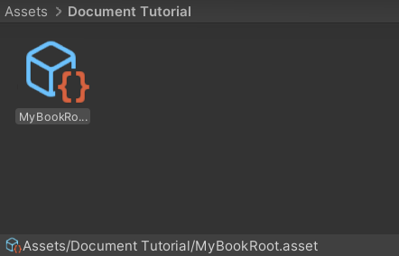
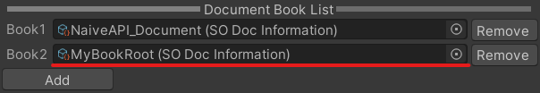

1_CreateBookRoot
1.1 Create Your Book Root
You can skip this step if you want to put your document below mine.
Create SODocInformation as BookRoot ( Assets / Create / Naive API / Document Information ) 
1.2 Add it to the DocBookList
( Edit / Project Settings / DocumentBuilder Settings) 